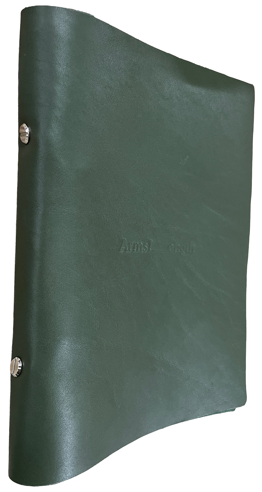
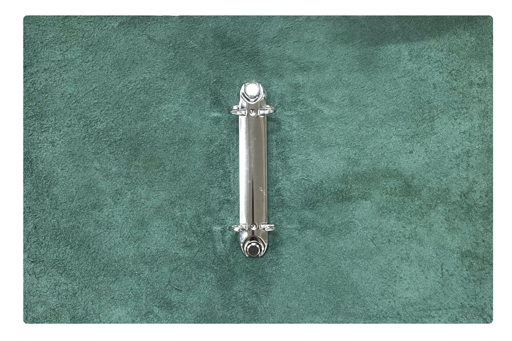
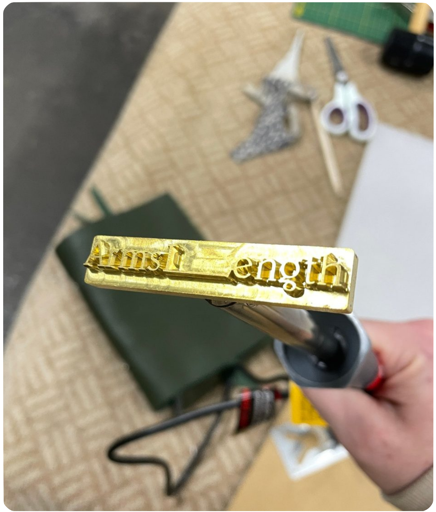

Armslength Menu Covers
Custom leather goods for a restaurant
Menu covers made for the restaurant Armslength. I sourced the leather and hardware, made a custom stamp to heat-deboss the logo, and made 30 covers.




Custom leather goods for a restaurant
Menu covers made for the restaurant Armslength. I sourced the leather and hardware, made a custom stamp to heat-deboss the logo, and made 30 covers.


